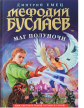

В Книге Судеб записано, что Мефодий Буслаев пройдет лабиринт Храма Вечного Ристалища в день своего тринадцатилетия. Мальчишка, родившийся в минуту полного солнечного затмения, впитал тайный страх миллионов смертных. Именно тогда в нем пробудился дар. Благодаря своему дару, не осознавая того, он аккумулирует в себе самые разные энергии окружающих: любви, боли, страха, восторга, злости - и трансформирует их в абсолютную магию. Его дар и то, что он вынесет из Храма Вечного Ристалища, нужны стражам Тьмы, нужны и стражам Света... Как, сделав выбор между Светом и Тьмой, остаться собой? На этот вопрос Мефодию придется искать ответ самому...